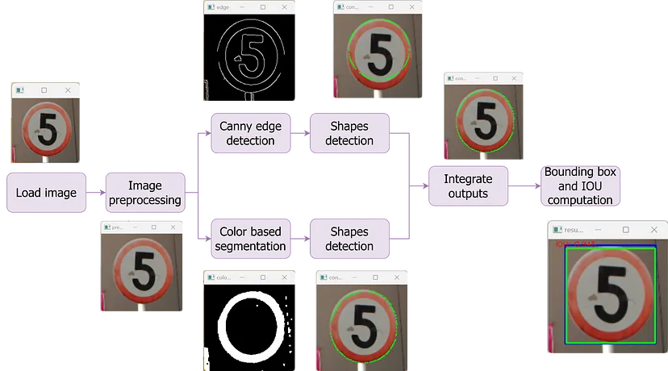

Traffic Sign Recognition (TSR) is a technology developed to recognize traffic signs and displays them on the driver's dashboard. It is part of the advanced driver-assistance systems (ADAS) that uses cameras and sensors to provide for the driver additional information in order to increase road safety and enables various levels of autonomous driving. Other technologies part of ADAS are, for instance, adaptive cruise control, lane departure detector, parking sensors and blind spot monitor.
This is a university project that demonstrates some methods to implement a traffic sign recognition system, focusing mostly on classical image processing methods, rather than on artifficial intelligence and computer vision.
Traffic signs were standardized in 1968 by the Vienna Convention on Road Signs and Signals treaty. This means that this convention can be used in most cases of traffic sign detection.
They are highly visible signs next to or on the roads that usually have a border of a specific color (e.g. red with white or yellow background, or blue background and white marking), and an easily interpretable drawing or text in the center of it. The shape of the signs are meant to be easily recognizable (triangle, circle), some important signs having unique shapes, for instance the Give Way or Stop Ahead signs.
Therefore, for recognizing traffic signs a shape detection algorithm would be ideal. This can be done by modifying the original image into a binary one using the Canny edge detection algorithm (because of the signs' standardized shapes) or using color based segmentation (because of the signs' standardized colors).
Using Convolutional Neural Networks An example for such an implementation can be found on the following webpage: https://www.analyticsvidhya.com/blog/2021/12/traffic-signs-recognition-using-cnn-and-keras-in-python/ .
Using Image Processing algorithms
The following example demonstrates Traffic Sign Segmentation based on canny edge detection and color based segmentation.
The steps of the image processing pipeline is the following:

[1] Algorithm using Convolution Neural Nets: https://www.analyticsvidhya.com/blog/2021/12/traffic-signs-recognition-using-cnn-and-keras-in-python/
[2] Comparison of ML solutions: https://www.ncbi.nlm.nih.gov/pmc/articles/PMC10223536/#:~:text=Traffic%20sign%20recognition%20can%20be%20divided%20into%20machine%20learning%20and,NN)%2C%20and%20decision%20trees.
[3] Traditional Traffic Sign Segmentation pipeline: https://jq0112358.medium.com/traffic-sign-segmentation-with-classical-image-processing-methods-canny-edge-detection-color-8ff1096535db
[4] Canny edge detection: https://docs.opencv.org/4.x/da/d22/tutorial_py_canny.html
[5]